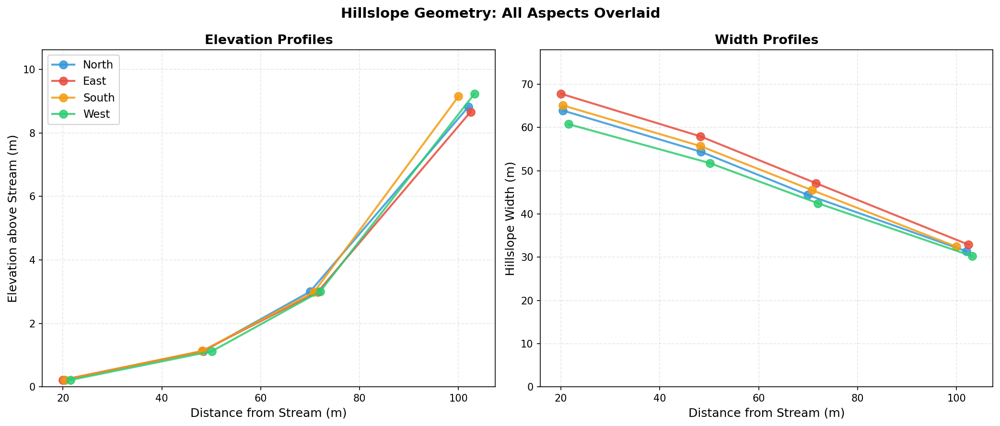
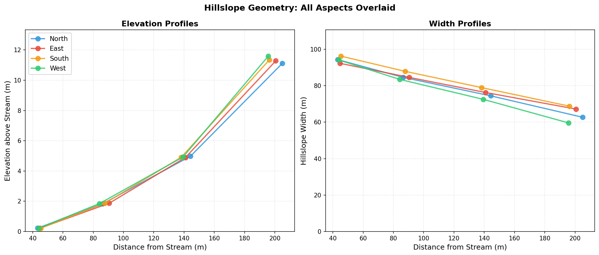
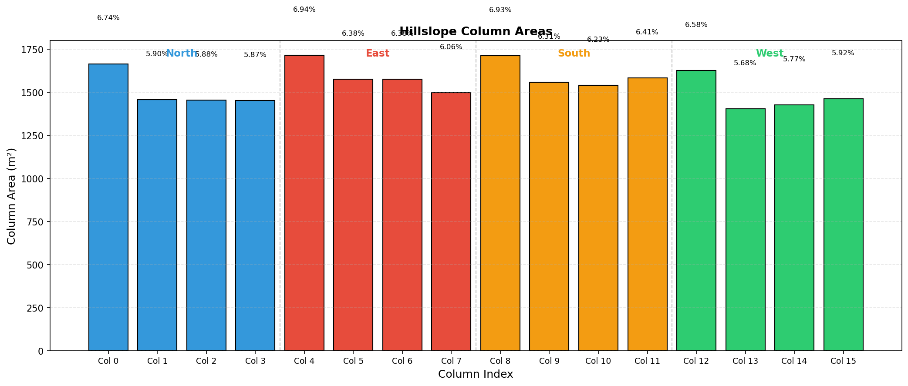
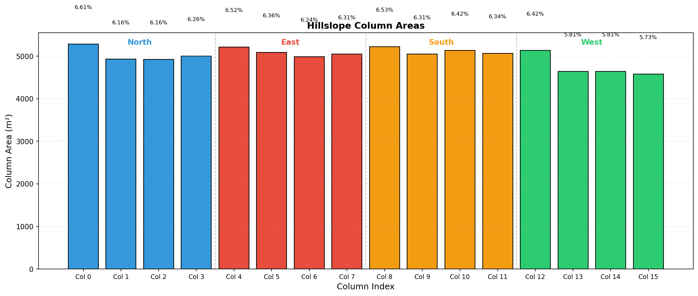

Dataset Comparison¶
Comparison of Swenson's global hillslope dataset (90m MERIT DEM) against our OSBS-derived datasets (1m NEON LIDAR).
Datasets¶
| Dataset | Source DEM | Resolution | Coverage | File |
|---|---|---|---|---|
| Swenson (Global) | MERIT | ~90m | Full OSBS gridcell | hillslopes_osbs_c240416.nc |
| Interior (1m) | NEON LIDAR | 1m | 150 interior tiles | hillslopes_osbs_interior_c260127.nc |
| Trimmed (1m) | NEON LIDAR | 1m | 39 trimmed-perimeter tiles | hillslopes_osbs_trimmed-test_c260202.nc |
Variable Sources¶
Our pipeline computes most hillslope parameters directly from the 1m LIDAR DEM, but some variables use placeholder values.
Computed from DEM¶
These variables are derived from DEM analysis following Swenson's methodology:
| Variable | Method |
|---|---|
hillslope_elevation |
Mean HAND (Height Above Nearest Drainage) per elevation bin |
hillslope_distance |
Median DTND (Distance To Nearest Drainage) per bin |
hillslope_width |
Trapezoidal plan-form fit (Swenson & Lawrence 2025) |
hillslope_area |
Fitted trapezoidal areas, not raw pixel counts |
hillslope_slope |
Mean topographic slope from DEM gradient |
hillslope_aspect |
Circular mean aspect per bin |
pct_hillslope |
Relative area fraction per aspect |
hillslope_stream_slope |
Derived from lowest-bin slopes × 0.5 |
Placeholder Values¶
These variables use hardcoded defaults rather than computed values:
| Variable | Our Value | Swenson (Global) | Notes |
|---|---|---|---|
hillslope_bedrock_depth |
1e6 m | 0.0 m | Placeholder for "effectively infinite" depth |
hillslope_stream_depth |
0.3 m | 0.27 m | Typical small stream estimate |
hillslope_stream_width |
5.0 m | 4.41 m | Typical small stream estimate |
Stream Parameters
The stream channel parameters (depth, width) in our files are rough estimates, not computed from the DEM. Swenson's global dataset derived these from hydraulic geometry relationships. For accurate OSBS simulations, these values should be refined using field observations or regional stream data.
Why Placeholders?¶
-
Bedrock depth: No subsurface data available. The 1e6 m value effectively tells CTSM "no bedrock constraint" on soil column depth.
-
Stream geometry: Requires either:
- Field measurements of bankfull width/depth
- Regional hydraulic geometry relationships (e.g., Leopold curves)
- Stream gauge data
Our pipeline lacks this external data, so we use conservative estimates.
Parameter Comparison¶
Values are averaged across all 4 hillslope aspects (N, E, S, W).
| Parameter | Swenson (Global) | Interior (1m) | Trimmed (1m) |
|---|---|---|---|
| Elevation range (m) | 0.17 - 8.14 | 0.22 - 9.24 | 0.22 - 11.60 |
| Distance range (m) | 67 - 541 | 20 - 103 | 43 - 205 |
| Mean slope (m/m) | 0.011 | 0.040 | 0.041 |
| Mean width (m) | 539 | 49 | 80 |
| Total area (km²) | 1.19 | 0.025 | 0.080 |
Key Observations¶
-
Distance scales differ dramatically: The global dataset has hillslope distances 5-25x larger than the LIDAR-derived data. This reflects the coarser stream network delineation from 90m MERIT vs. the fine-scale drainage patterns captured at 1m.
-
Slopes are steeper in LIDAR data: Mean slopes are ~3.5x higher in our datasets. The 90m MERIT smooths over local topographic variability, while 1m LIDAR captures actual gradients.
-
Width scaling follows distance: Narrower widths in our data are consistent with the shorter hillslope distances.
-
Elevation ranges are similar: Despite resolution differences, the elevation relief (~8-12m) is comparable across datasets, which is expected for the same geographic area.
Elevation and Width Profiles¶
These plots overlay all 4 hillslope aspects (N, E, S, W) showing elevation above stream and width at each topographic position.
Swenson (Global - 90m MERIT)¶

Interior Selection (1m NEON LIDAR)¶

Trimmed Selection (1m NEON LIDAR)¶

Column Area Distribution¶
Bar charts showing the area distribution across the 16 hillslope columns.
Swenson (Global - 90m MERIT)¶

Interior Selection (1m NEON LIDAR)¶

Trimmed Selection (1m NEON LIDAR)¶

Implications for CTSM Simulations¶
The differences between global and LIDAR-derived hillslope data have important implications:
-
Lateral flow dynamics: Shorter hillslope distances mean faster lateral water redistribution in the 1m datasets.
-
Water table gradients: Steeper slopes will drive stronger hydraulic gradients between hillslope elements.
-
TAI representation: The finer resolution may better capture the terrestrial-aquatic interface dynamics that are the focus of this research.
-
Scale consistency: The 1m LIDAR data represents a single catchment's actual topography, while the global data represents an average over a much larger gridcell.
Next Steps¶
- Run branch simulations with both datasets to quantify hydrological differences
- Compare simulated water table dynamics against observations
- Evaluate which resolution better represents OSBS wetland hydrology